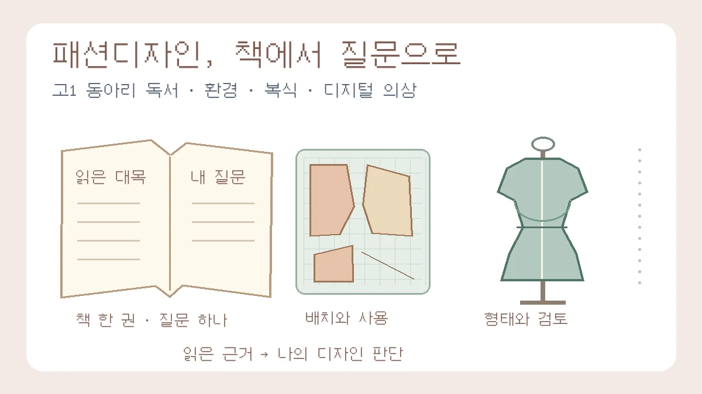

고1 패션디자인 독서 탐구: 추천 도서 3선과 보고서 쓰는 법
책 한 권에서 질문 하나를 골라, 읽은 대목과 디자인 판단을 연결하세요
목차
- 무엇을 남길지 먼저 정하기
- 옷 사용 설명서와 환경 질문
- 옷장 속 인문학과 사용성 비교
- 디지털 클로딩과 가상 의상 검토
- 네 단계 보고서 작성
- 짧은 일정과 활동 사실 기록
- 확인 자료와 적용 범위
핵심 요약
- 도서 서지와 공개 목차에 근거한 후보, 전권 정독 서평과 구분
- 종이 자투리 면적과 탄소배출량은 다른 지표
- 가상 의상과 센서 기반 스마트 의류를 구분

“패션디자이너가 되고 싶은 고1인데, 동아리 독서 보고서에는 어떤 책이 좋을까요?” 처음부터 어려운 소재공학이나 거대한 패션산업 전체를 다룰 필요는 없습니다. 내가 궁금한 옷의 문제를 설명하는 책 한 권을 고르고, 읽은 대목 하나를 비교표·스케치·짧은 비평으로 발전시키면 됩니다.
이 글은 환경·인문학·디지털 의상의 세 독서 경로를 제안합니다. 세 권을 모두 읽거나 프로그램을 유료로 구입하라는 뜻은 아닙니다. 감상문을 요구하는 과제라면 구체적인 대목과 자신의 생각 변화를 쓰는 것도 적절합니다. 독후감은 무의미하다거나 특정 책이 높은 평가를 보장한다고 보지 않습니다. 먼저 담당교사가 안내한 독서 범위·분량·인용 방식·AI 활용 기준을 확인하세요.
1. 책을 고르기 전에 ‘무엇을 남길지’부터 정하세요
- 환경과 소비가 궁금하다면: 《내 몸과 지구를 살리는 옷 사용 설명서》에서 출발해, 옷의 생산·세탁·사용·폐기를 질문으로 좁힙니다.
- 옷과 사람의 관계가 궁금하다면: 《옷장 속 인문학》을 읽고 주머니, 몸의 표현, 취향처럼 눈으로 비교할 수 있는 대상을 택합니다.
- 가상 의상에 관심이 있다면: 《디지털 클로딩 개론》을 선택적으로 읽되, 처음부터 소프트웨어 실습 전체를 완수하려 하지 않습니다. 기술서 읽기가 부담스러우면 앞의 두 경로를 먼저 택해도 됩니다.
학교·공공도서관에서 정확한 제목과 저자를 검색하고 목차·미리보기로 난이도를 확인하세요. 학교가 완독을 요구하는지, 일부 장을 읽고 탐구해도 되는지에 따라 선택이 달라집니다. 아래 추천은 확인한 서지·출판사 소개·공개 목차에 근거한 읽기 후보입니다. 편집팀이 세 권 전체를 정독·서평했다는 뜻이 아니며, 제시한 활동은 책 속 실습을 그대로 옮긴 것이 아니라 별도의 교육용 제안입니다.
2. 환경 경로: 《내 몸과 지구를 살리는 옷 사용 설명서》
배온·배성호 지음, 철수와영희, 2026년 9월 1일 발행. ISBN 9791171530526. 공개 목차는 옷의 재료와 생산, 패스트패션, 세탁, 미래의 옷과 헌 옷의 행방 등을 다룹니다.[1] 일상에서 입는 옷으로 시작하고 싶은 학생에게 첫 후보로 권합니다.
고1용 질문: “자투리를 줄이는 배치와 오래 입기 쉬운 디자인은 어떤 점에서 다른가?” 우선 책에서 자원 사용이나 옷의 수명과 관련한 대목을 찾고 쪽수와 자신의 요약을 적습니다. 이후 종이 패턴 배치, 수선하기 쉬운 여밈, 세탁·관리 방법 중 하나만 비교하세요. 책이 아래의 패턴 계산을 제시했다고 쓰지 않습니다.
보충 자료인 UNEP의 2020년 보고서는 섬유 가치사슬의 단계별 환경·사회 영향을 함께 검토합니다.[4] 따라서 원단을 덜 남기는 것과 옷 한 벌의 전체 환경부하를 줄이는 것은 같은 판단이 아닙니다. 소재·염색·사용 수명·세탁·운송·폐기 조건을 확인하지 않고 “천연섬유는 항상 친환경”, “재활용 섬유면 탄소가 반드시 적다”라고 결론 내리지 마세요. 생분해 조건이나 실제 재활용 경로를 조사하지 않았다면 추정으로 표시합니다.
작게 해 볼 활동: 같은 종이 조각, 두 가지 배치
아래 수치는 교육용 가상 설계·계산 예시이며 실제 의류 재단 실험이 아닙니다. 가로 20cm의 종이 띠에 10×10cm 조각 두 개, 10×8cm 한 개, 10×2cm 한 개를 겹치지 않게 놓는다고 합시다. 네 조각의 총면적은 300cm²로 같습니다.
- 배치 A: 10×10cm 두 장을 첫 줄에 나란히 놓고, 그 아래 왼쪽에 10×8cm, 오른쪽 맨 아래에 10×2cm를 놓아 전체 길이를 20cm로 잡습니다. 사용 직사각형은 20×20=400cm², 남는 면적은 100cm²입니다.
- 배치 B: 같은 조각을 재배치해 왼쪽 열에 10×10cm와 10×8cm, 오른쪽 열에 10×10cm와 10×2cm를 위에서부터 이어 놓습니다. 전체 길이는 18cm, 사용 면적은 360cm², 남는 면적은 60cm²입니다.
- 남는 면적 비율: (사용 직사각형 면적−조각 총면적)÷사용 직사각형 면적×100. A는 25%, B는 약 16.7%입니다. 비율 차이는 약 8.3%포인트입니다. 분모도 달라졌다는 점을 함께 적으세요.
직접 종이로 비교한다면 배치도와 눈금 사진을 남기고 실제 치수로 다시 계산합니다. 이 예시는 자투리를 줄이는 배치이지 제로웨이스트 달성이 아닙니다. 실제 옷에는 원단 폭, 결 방향, 시접, 무늬 맞춤, 착용감, 내구성 같은 조건이 더 있습니다. 종이 면적 감소율을 탄소배출 감소율로 바꾸지 말고, 전 과정 탄소 자료가 없으면 탄소발자국을 정량 분석했다고 쓰지 않습니다.
수정 전
제로웨이스트 패턴으로 환경오염을 해결하고 탄소배출을 40% 줄였다.수정 후 · 위 가상 예시를 설명하는 문장
동일한 종이 조각의 두 배치를 비교했을 때 남는 면적은 100cm²에서 60cm²로 줄었다. 다만 이는 종이 배치 모델의 결과이며 의류의 탄소배출 감소를 측정한 것은 아니다. 실제 의상에는 시접과 원단 결 방향을 반영해 다시 검토해야 한다.
원서 읽기가 가능하다면 Dana Thomas의 Fashionopolis도 확장 후보입니다. 원서 출판사는 의류산업의 문제와 이를 바꾸려는 기술·실천을 다룬 책으로 소개합니다.[6] 여기서는 영문 원서 제목과 저자를 확인했으며, 임의의 한국어 제목을 번역본의 정식 서지처럼 쓰지 않습니다.
3. 인문학 경로: 《옷장 속 인문학》
김홍기 지음, 중앙북스, 2016년 9월 7일 발행. ISBN 9788927807926. 공개 목차에는 몸과 자기표현, 취향, 티셔츠·스니커즈·주머니 등 옷과 삶을 연결하는 항목이 있습니다.[2] 모든 시대의 복식사를 한 권으로 입증하려 하기보다, 직접 읽은 항목 한 가지를 중심으로 비교하는 편이 좋습니다.
고1용 질문: “주머니의 위치와 크기는 옷의 사용성과 외형에 어떤 차이를 만들까?” 책에서 주머니 관련 대목을 읽은 뒤, 자신의 옷 두 벌에서 입구 폭·깊이·위치·여밈을 관찰합니다. 개인 옷에 실제로 물건을 넣어 볼 때는 같은 작은 물건을 사용하고, 착용자 사진 대신 옷을 평평하게 둔 사진이나 도식을 써도 됩니다. 측정하지 않았다면 ‘넣기 편해 보인다’는 시각적 판단과 실제 사용 결과를 구분하세요.
산출물: ‘책에서 읽은 해석 / 내 옷에서 관찰한 형태 / 가능한 설명 / 다른 설명’ 네 칸과 주머니를 수정한 스케치 한 장. 주머니가 작다는 관찰만으로 제작자의 성차별 의도나 모든 시대의 권력 구조를 증명할 수는 없습니다. 실루엣, 원가, 사용 목적 등 대안 설명도 적어 보세요. 관찰한 두 벌을 모든 남성복·여성복의 대표 표본으로 삼지 않습니다.
복식사로 확장하고 싶다면 V&A의 빅토리아 시대 속옷 해설에서 코르셋·크리놀린·버슬의 구조와 활동성 차이를 살펴보세요. 자료는 같은 종류 안의 다양한 구조와 조정 장치도 설명합니다.[5] “코르셋의 소멸=곧바로 여성 해방 완성”처럼 형태 변화와 사회 변화 사이의 인과를 단순화하지 않습니다. 비교할 유물의 연대·지역·재료·소장처를 적고, 특정 시대의 유물을 현대 젠더리스 디자인과 동일한 의도로 만들어졌다고 단정하지 마세요.
학생용 결론 틀
책의 [쪽·대목]을 읽고 옷의 [형태 요소]를 단순한 장식이 아니라 [사용·표현의 관점]에서 보게 되었다. 내가 비교한 [대상]에서는 [실제 관찰]이 달랐다. 이를 바탕으로 [디자인 변경]을 제안했지만, [확인하지 않은 사용 조건·사람들의 반응]까지 설명하지는 못한다. 다음에는 [추가로 확인할 자료]로 이 해석을 점검하고 싶다.
4. 기술 경로: 《디지털 클로딩 개론》
고형석 지음, 교문사, 2015년 8월 20일 발행. ISBN 9788936315153. 공개 목차에는 디지털 클로딩의 작업 흐름, 바디 생성·측정, 패널 구성, 의복 시뮬레이션 등이 있으며 실습은 DC Suite 사용을 전제합니다.[7] 한국의류학회 신간 소개에서도 이 책의 3D 의상 구현 범위를 확인할 수 있습니다.[3]
난이도 주의: 고1 모두에게 가벼운 첫 독서로 권하는 책은 아닙니다. 2015년 기술서를 현재 CLO 사용 설명서로 소개하거나, AI·웨어러블 헬스케어 전체를 다룬다고 확장하지 않습니다. 책을 구할 수 있고 기술에 관심이 있다면 작업 흐름을 설명하는 부분부터 읽되, 과제가 완독을 요구하면 분량과 난이도를 보고 다른 후보를 고르세요. 일부만 읽었다면 그 범위를 그대로 기록합니다.
고1용 질문: “가상 의상 화면으로 확인할 수 있는 것과 실물에서 확인해야 할 것은 무엇일까?” ‘스케치 → 패턴 → 가상 검토 → 실물 확인’의 흐름을 직접 읽은 내용에 맞춰 그려 보세요. 같은 치마나 상의를 가정하고, 화면에서 볼 형태·색 배치와 실제로 확인할 촉감·압박감·봉제 상태를 구분한 체크리스트를 작성할 수 있습니다. 이것은 활동 제안이지 책의 실습을 수행했다는 결과가 아닙니다.
허용된 도구가 없다면 종이 스케치와 문헌 비교로 끝내도 됩니다. 프로그램을 쓰려면 학교 이용 권한과 장비를 먼저 확인하고, 책 속 도구와 실제 이용 도구가 다르면 구분해서 적습니다. 자신의 체형·신체 사진이나 친구의 건강정보를 업로드하는 활동은 이 과제에 필요하지 않습니다.
핵심 한계: 화면에서 그럴듯한 옷이 곧바로 실제 맞음새·내구성·건강 측정 기능을 검증한 옷은 아닙니다. 소재·인체·동작 조건을 입력하고 실물과 대조하지 않았다면 ‘설계 검토 가능성을 정리했다’고 씁니다. 실물 샘플 몇 벌을 대체했는지 조사하지 않고 “폐기물이 몇 % 감소했다”고 만들지 않습니다. 센서가 들어간 스마트 의류와 가상 의상 시뮬레이션도 서로 다른 탐구 대상입니다.
5. 네 단계로 쓰기: 읽은 근거에서 디자인 판단까지
- 질문: 원래의 관심과 읽은 대목을 연결합니다. “패션이 좋아서 읽었다”에 그치지 말고, “주머니가 얕은 이유가 궁금해 해당 항목을 읽었다”처럼 출발점을 좁힙니다. 실제로 배우지 않은 교과 단원을 동기처럼 꾸미지 않습니다.
- 읽기와 탐구: 저자·판본·쪽수, 짧은 인용, 자기 말로 쓴 요약, 나의 질문을 나눠 기록합니다. 필요한 줄거리·주장 요약을 먼저 제시하고 비교표·스케치·자료 분석으로 이어 갑니다. 책의 주장과 자신의 관찰이 어느 문장인지 드러내세요.
- 한계와 수정: 단순히 “비싸다”를 붙이기보다 무엇을 확인하지 못했는지 씁니다. 실제 가격·내구성을 조사하지 않았다면 바이오 소재가 모두 비싸고 약하다고 단정하지 않습니다. 종이와 원단의 차이, 유물의 대표성, 가상 화면과 실물 차이 중 자신의 방법에 해당하는 한계를 고릅니다.
- 결론과 다음 질문: 질문에 대한 제한된 답과 생각의 변화를 먼저 쓰고, 후속 활동은 마지막에 분리합니다. 다음 학년 과목이나 거창한 프로토타입을 필수로 약속할 필요는 없습니다. 학교에서 실제로 할 수 있는 다음 확인 한 가지만 남깁니다.
처음에는 임시 서론을 써도 됩니다. 본론·결론이 정리된 뒤 목적·방법·범위가 맞도록 서론을 고치는 것은 유용한 순서이지, 모든 보고서가 반드시 따라야 하는 법칙은 아닙니다. 학교가 감상 중심 글을 요구하면 관찰 실험을 덧붙이기보다 구체적인 대목과 자신의 경험·생각 변화를 충분히 설명하세요.
6. 짧은 일정과 실제 활동 기록
일주일을 잡을 수 있을 때의 제안: 1일차에는 과제와 도서 접근성을 확인하고, 2~3일차에는 책을 읽으며 쪽수와 질문을 적습니다. 4일차에는 비교 대상·자료를 정리하고, 5일차에는 표나 스케치를 만듭니다. 6일차에는 결론·감상과 초안을 쓰고, 7일차에는 인용·수치·과장 표현을 고칩니다. 완독 속도나 책 분량에 따라 더 시간이 필요할 수 있습니다.
학교생활기록부 문장을 학생이 교사 대신 완성하는 것이 목적은 아닙니다. 특히 동아리 활동 기록과 교과 세특을 같은 항목으로 단정하지 마세요. 교사가 확인할 수 있도록 읽은 범위·본인의 행동·산출물·수정 과정을 사실대로 정리하면 됩니다.
학생의 활동 사실 정리용 틀
[저자]의 《[정확한 제목]》 중 [실제 읽은 장·쪽]을 읽고 [질문]을 정했다. [대상·자료]를 [실제로 한 방법]으로 비교해 [표·스케치·비평]를 작성했다. 초안의 [원래 표현]을 [수정 표현]으로 고쳤으며, 그 이유는 [읽거나 관찰한 근거]이다. [측정·조사하지 않은 사항]은 확인하지 못했고, [다음 활동]은 아직 계획 단계다.
발표나 소프트웨어 실습을 하지 않았다면 완료형으로 적지 않습니다. 친구와 함께했다면 내 역할과 공동 작업을 나누세요. “융합 역량을 입증함” 대신 실제 만든 표·고친 스케치·바꾼 판단을 보여주는 편이 읽는 사람에게 명확합니다.
보고서 전체 구성이 막힌다면 탐구보고서 대표 작성 가이드, 감상문을 쓰려면 구체적인 대목에서 생각 변화를 쓰는 독서 가이드를 참고하세요. 활동을 정리할 때는 교사가 확인할 수 있는 활동 사실 정리법과 함께 점검할 수 있습니다.
7. 확인한 자료와 이 글의 범위
확인일: 2026년 11월 10일. 도서 정보와 공개 소개·목차, 보충 자료의 해당 내용을 확인했습니다. 책 전체 정독이나 실제 학생 실험을 수행한 기록은 아닙니다. 질문·종이 배치 모델·일정·문장 틀은 편집팀의 교육용 제안입니다. 학교 과제의 기준을 대신하거나 수행평가·입시 결과를 보장하지 않습니다. 도서의 대출·판매 가능 여부와 도구 이용 조건은 이용 시점에 별도로 확인하세요.
- [1] KOBIC — 내 몸과 지구를 살리는 옷 사용 설명서
- [2] 중앙북스 제공 도서 소개·목차(예스24) — 옷장 속 인문학
- [3] 한국의류학회 2016년 제1호 뉴스레터 — 디지털 클로딩 개론 신간 소개
- [4] UNEP — Sustainability and Circularity in the Textile Value Chain: Global Stocktaking (2020, EU 공개 사본)
- [5] V&A — Corsets, crinolines and bustles: fashionable Victorian underwear
- [6] Penguin Random House — Fashionopolis by Dana Thomas
- [7] KOBIC — 디지털 클로딩 개론 서지·출판사 소개·목차
관련 글

탐구보고서 쓰는 법: 형식 6요소와 서론·본론·결론 실제 예시NEW
탐구보고서의 기본 구조 6요소와 작성 순서, 한 가지 가상 예시로 완성하는 서론·본론·결론 문장, 하루 30분씩 5일 작성 계획과 수정 기록 방법을 정리한 대표 작성 가이드입니다.

연구원이 꿈이라면 어떤 책을 읽을까? 분야별 도서 3선과 감상문 쓰기NEW
이중나선·파인만의 일화·팩트풀니스를 연구자의 질문과 판단 수정이라는 관점으로 읽습니다. 분야별 읽기 질문, 회고록과 원자료의 구분, 감상문 네 문단과 실제 수행을 꾸미지 않는 예시를 안내합니다.

교과세특이란? 탐구보고서와 세특을 자연스럽게 연결하는 기준과 과목별 예시NEW
교과세특의 뜻과 2026 기재요령의 기록 원칙, 탐구보고서 제출만으로 기록되지 않는 이유, 학생이 남길 사실 메모와 수학·사회 등 5개 과목의 과정 예시를 정리한 대표 가이드입니다.
이 글은 일반 교육 정보이며 특정 대학 합격·학생부 평가·면접 결과를 보장하지 않습니다. 학교와 대학의 공식 안내를 함께 확인해 주세요.